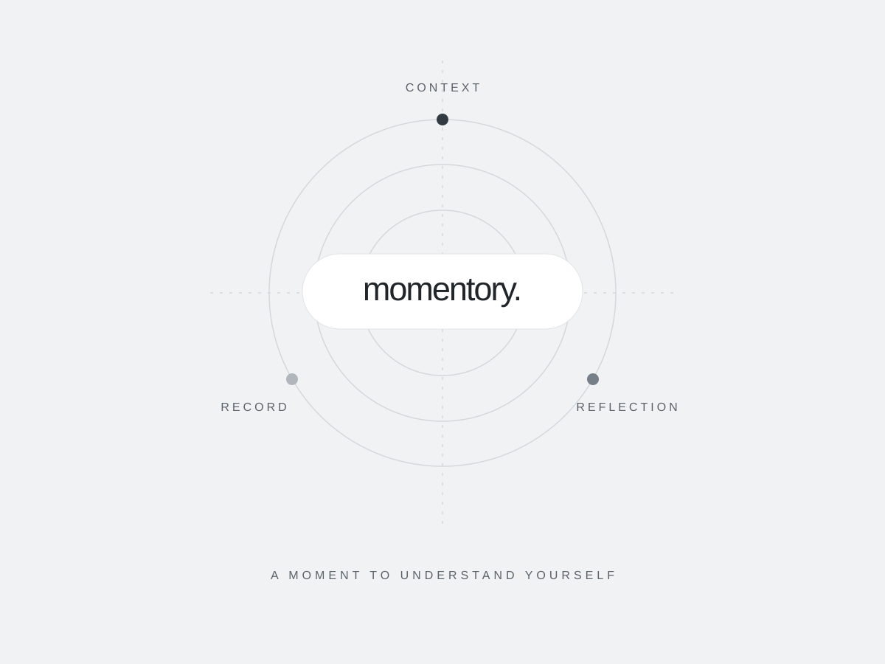

Project Overview
일상의 경험에서,
나를 이해하는 기록으로.
Momentory는 AI 기반 감정 회고 모바일 애플리케이션입니다. 사용자가 자신의 일정과 경험을 바탕으로 AI와 대화하고, 감정을 탐색하며, 일기를 작성하고 감정의 변화를 돌아볼 수 있도록 돕습니다.
개발 배경
하루의 경험을 떠올리는 일과 감정을 말로 정리하는 일 사이의 간격에 주목했습니다. 일정이라는 구체적인 맥락을 회고의 시작점으로 삼았습니다.
프로젝트 목표
무엇을 기록할지 고민하는 부담을 낮추고, 대화에서 발견한 감정과 바람을 일상의 작은 행동으로 연결하는 경험을 제공합니다.
개발 배경과 목표는 제공된 서비스 설명을 바탕으로 정리했습니다. 실제 팀의 기획 배경은 확인 후 보완할 예정입니다.
Problem
“오늘의 마음을,
어디서부터 적어야 할까?”
감정을 기록하려 해도 하루의 어떤 순간부터 돌아봐야 할지, 느낀 감정을 어떻게 표현해야 할지 막막할 수 있습니다. Momentory는 이 상황을 해결하고자 합니다.
기록의 시작
빈 페이지 앞에서 무엇을 써야 할지 결정해야 하는 부담.
감정의 이해
좋음과 나쁨만으로는 설명하기 어려운 복잡한 기분.
기록 이후의 변화
남긴 기록을 다시 읽고, 일상의 행동으로 연결하는 어려움.
문제 정의를 위한 서비스 관점의 가설입니다. 사용자 인터뷰나 정량 조사 결과로 제시한 내용은 아닙니다.
Solution
질문에서 시작해,
기록과 행동으로 이어지는 회고.
하루의 일정과 경험을 바탕으로 AI가 회고 대화를 이어갑니다. 감정을 구체적으로 탐색하고, 대화를 일기로 남긴 뒤, 바람카드와 주간 리포트로 기록을 다시 돌아보는 흐름입니다.
- 일정과 경험
오늘의 맥락 떠올리기
- AI 회고 대화
감정과 바람 살펴보기
- 일기와 바람카드
기록과 행동으로 연결하기
- 주간 감정 리포트
쌓인 변화 돌아보기
My Role
AI 회고 기획·개발, LLM 프롬프트 최적화·품질 평가, 개인화 A/B 테스트 설계·분석, 앱 화면 구현을 담당했습니다.
Tech Stack
로컬 프로젝트의 의존성, 코드, 저장소 설정에서 사용을 확인한 기술입니다.
프로젝트 전체의 기술 구성입니다. 개인별 담당 범위나 숙련도를 뜻하지 않습니다.
06 / THE EXPERIENCE
Key Features.
하루를 떠올리는 순간부터
기록을 다시 읽는 순간까지.
Results
아이디어에서,
실제로 만나는 모바일 서비스로.
AI 회고, 감정 탐색, 일기, 바람카드, 쉼터, 주간 리포트로 이어지는 서비스가 구현되었으며, iOS와 Android 배포 경험이 있는 프로젝트입니다.
두 모바일 플랫폼 배포 경험
회고와 감정 기록을 연결하는 사용자 흐름
배포 경험은 제공된 요구사항 기준이며, Google Play 공개 페이지를 확인했습니다. App Store 공개 주소는 확인 후 추가할 예정입니다.